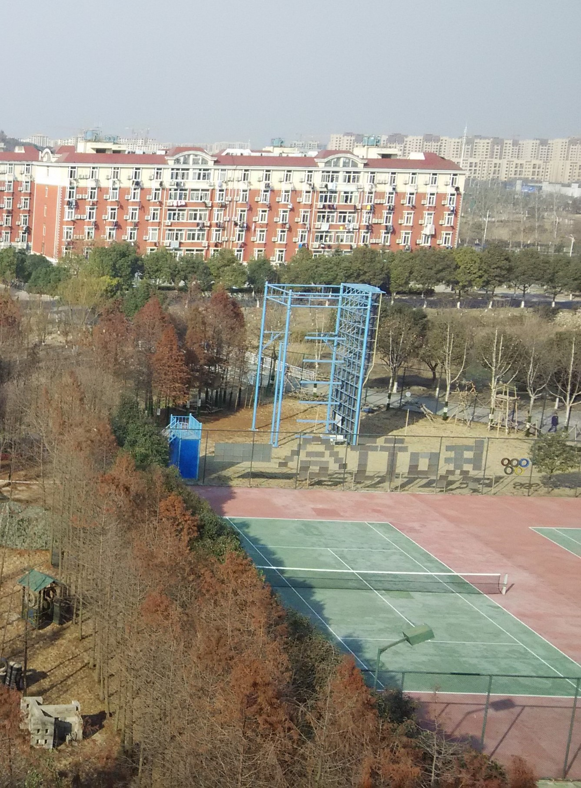

安徽工程大学
北冥有鱼，其名为鲲，鲲之大，不知其几千里也。 化而为鸟，其名而鹏，鹏之背，不知其几千里也； 怒而飞，其翼若垂天之云。是鸟也，海运则将徙於南冥； 南冥者，天池也。齐谐者，志怪者也。谐之言曰：  鹏之徙於南冥也，水击三千里，搏扶摇而上者九万里， 去以六月 息者也。野马也，尘埃也，生物之以息相吹也。 天之苍苍，其正色邪？其远而无所至极邪？其视下也，亦若是则已矣。
且夫水之积也 不厚，则其负大舟也无力；覆杯水於坳堂之上， 则芥为之舟，置杯焉则胶，水浅而舟 大也。风之积也不厚， 则其负大翼也无力；故九万里，则风斯在下矣，而後乃今培风。 背负青天，而莫之夭阏者，而後乃今将图南。蜩与学鸠笑之曰： 我决起而飞，枪榆枋，时则不至而控於地而已矣。奚以之九万里而南为？ 适莽苍者三餐而反，腹犹果然，适百里者宿舂粮，适千里者三月聚粮； 之二虫，又何知？
小知不及大知，小年不及大年，奚以知其然也？朝菌不知晦朔， 惠姑不知春秋，此小年也。楚之南有冥灵者，以五百岁为春， 五百岁为秋；上古有大椿者，以八千岁为春，八千岁为秋。 此大年也。而彭祖乃今以久特闻，众人匹之，不亦悲乎？
汤之问棘也是已。穷发之北，有冥海者，天池也。 有鱼焉，其广数千里，未有知其修者，其名为鲲。 有鸟焉，其名为鹏，背若泰山，翼若垂天之云， 搏扶摇羊角而上者九万里，绝云气，负青天，然後图南，且适南冥也。 斥笑之曰：彼且奚适也？我腾跃而上不过数仞而下， 翱翔蓬蒿之间，此亦飞之至也。而彼且奚适也？』此小大之辩也。
灰尘大母校的校园航拍图
安徽工程大学艺术学院 ……………………………… 钗头凤
安徽工程大学电气学院 ……………………………… 忆江南
安徽师范大学 ………………………………………… 蝶恋花
“ world hello world hello world hello world hello world hello world hello world hello world hello world hello world hello world ”